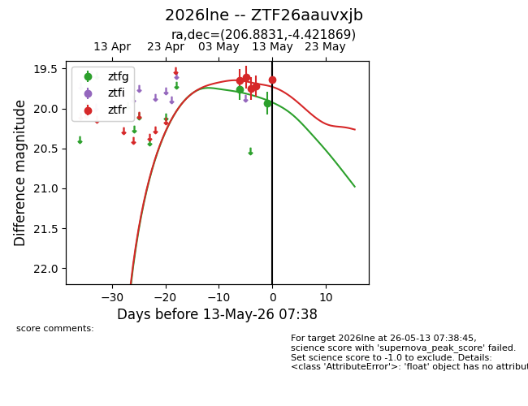
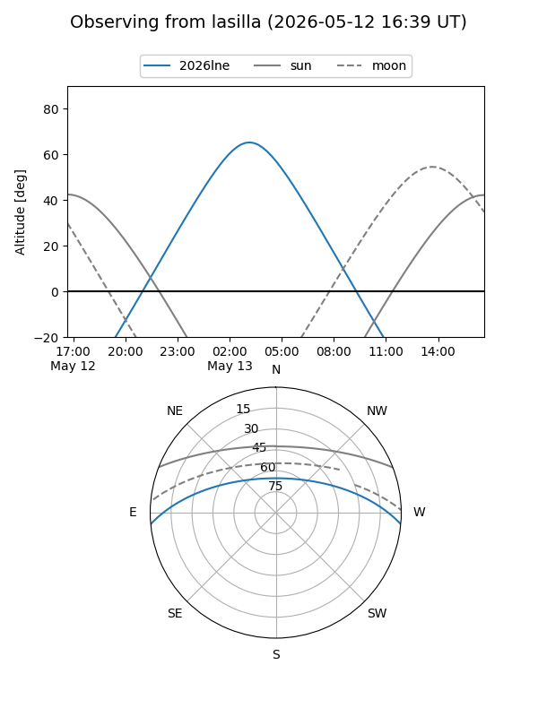
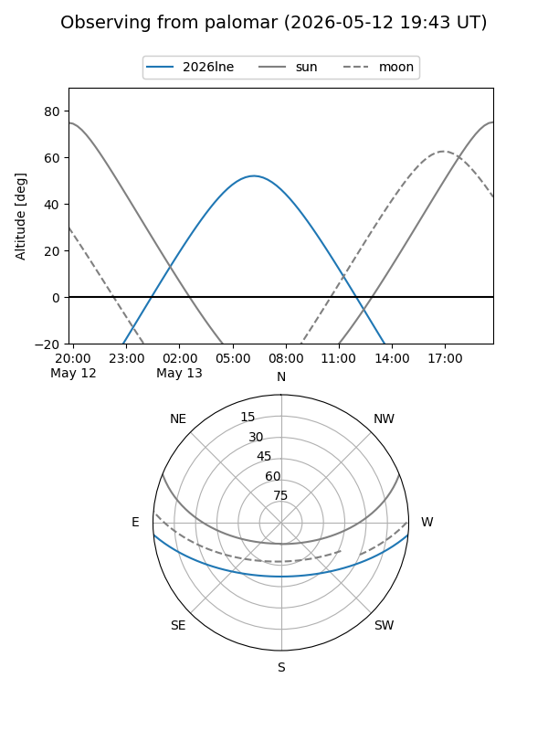
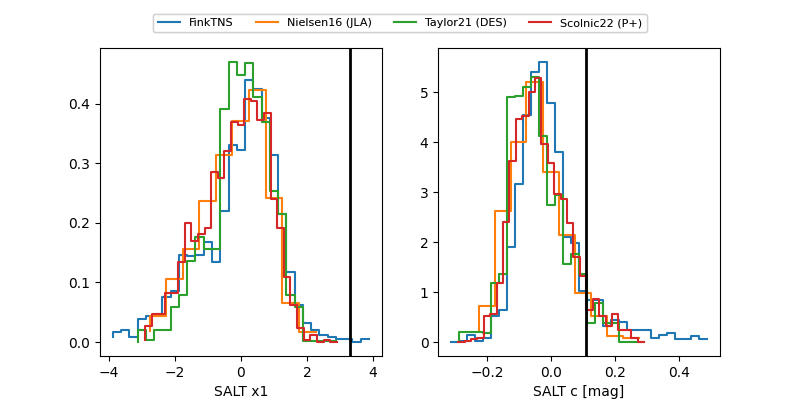

2026lne
Target 2026lne at 2026-05-13 07:40
Aliases and brokers:
FINK: link
Lasair: link
ALeRCE: link
TNS: link
YSE: link
alt names
ZTF26aauvxjb (ztf,fink_ztf)
2026lne (tns,yse)
Coordinates:
equatorial (ra, dec) = 206.8831,-4.42187
equatorial (HMS+DMS) = 13:47:31.95,-04:25:18.73
galactic (l, b) = (328.2934,+55.66322)
Flags:
Photometry:
last ztfg=19.93, ztfr=19.64
2 ztfg, 5 ztfr detections
Lightcurve

Visibility


Additional plots
